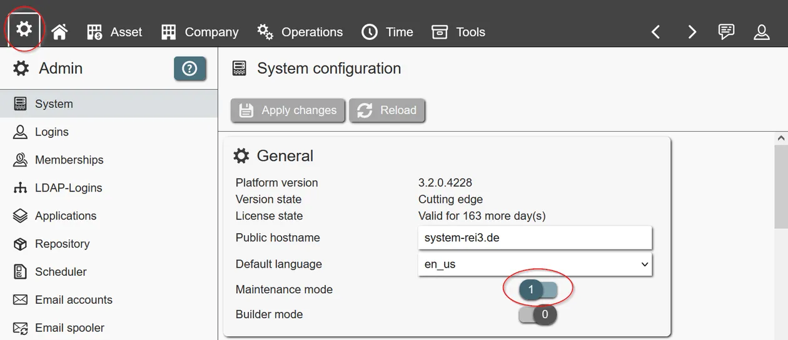
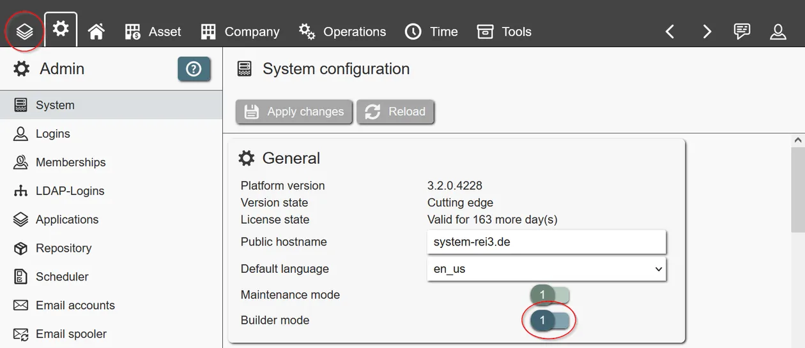
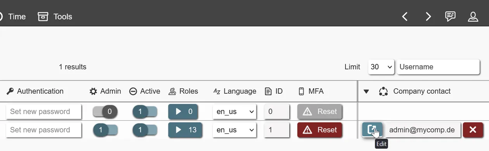
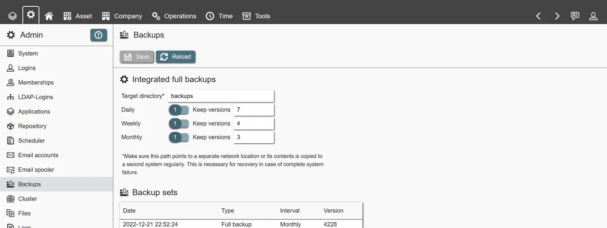

Updated 2023-06-18
This is the documentation for deploying and operating the REI3 application platform. It assumes some knowledge for the target infrastructure (Windows Server or Linux). Once running, administrators can deploy REI3 applications from online or local repositories in infrastructures with or without internet access.
Depending on the environment, different deployment models are available.
This model was created for small and medium size installations (~250 users) and is available for Windows Server. The stand-alone deployment has almost no external dependencies and includes an integrated database. It is the recommended model for organizations with smaller IT teams.
In this model REI3 runs as an application separate from its database system. This is recommended for large instances or when an organization has a database team onhand. This version can be deployed on Linux and Windows servers.
An option for development, demo and test instances. With the portable version, REI3 can be started on Windows servers or clients directly without any setup. Like the stand-alone model, the portable version includes its own database. It is not recommended to run anything productive from a portable instance.
To run REI3 the following requirements must be met:
To access a running REI3 instance, any modern browser can be used, like Firefox, Chrome or Safari. This includes mobile browsers. REI3 uses modern web standards; it does not support Internet Explorer.
REI3 comes with a graphical installer for Windows Server. The installer supports both stand-alone and dedicated deployment models.
config.json. The file config.json is located inside the chosen application directory. The database user must have full permissions for the chosen database.Independent of deployment model, REI3 is handled as a Windows service and can be started with the service manager (command: service.msc). REI3 will write to the Windows application log, should the service not start correctly.
Because of licensing terms, we cannot distribute Ghostscript with REI3. If you want to create PDF thumbnails, you have to download and install a current version of Ghostscript on the REI3 server.
For Linux servers, REI3 is available as a compressed archive with pre-compiled binaries. The installation steps are:
/opt/rei3/ for example).r3 executable (chmod u+x r3).config_template.json to config.json - keep it in the same directory as the r3 executable.config.json. The database user must have full permissions for the chosen database.sudo apt install imagemagick ghostscript).sudo apt install postgresql-client).sudo ./r3 -install).systemctl start rei3 for example).If the service does not start, REI3 writes to syslog.
When running, REI3 is by default reachable on port 443. You can use any modern browser to access REI3 locally at https://localhost/ or from the network, given a configured firewall. During installation, a single admin user is created; username and password are both 'admin'.
After login, an admin user can access the admin panel to manage users, install applications, access system logs and so on. The default password should be changed immediately.
REI3s core configuration can be changed within its configuration file (config.json), which is located in the chosen REI3 installation directory. Setting file paths, web server port and database connection details is straightforward. Changes are applied when the application service restarts.
During installation, REI3 creates a self-signed certificate to allow encrypted access to the application. It is not recommended to keep this certificate. If at all possible, a properly signed certificate should be provided for REI3 to ensure secure communication with trust between clients and server.
Some common considerations / pitfalls:
syslog for Linux, Windows application log otherwise).When clients talk to a REI3 server, they use two methods - both are running on the same port (usually 443) as TCP:
When it comes to proxy servers (regardless of forward or reverse proxy), HTTP(s) requests can be handled like any other web application. So good-practices such as request timeouts are sensible.
Websockets however are meant to stay active until either side (server or client) purposefully closes the connection. This can be because of events like a logout or a server going into maintenance mode. When configuring a proxy, request timeouts for Websocket connections should be disabled or at least set to multiple hours. Some proxies (like HAProxy) call these connections 'tunnel' instead of 'client' or 'server'. Every time a Websocket connection is forcefully closed by a proxy, the client must re-connect and can loose unsaved changes.
In case of cluster-setups, a Websocket connection must 'stick' with one particular server until its closed. Even if the initial requests are assigned via round-robin for example, a particular server is responsible for ongoing Websocket communication with a specific client. HTTP(S) requests can be handled by any cluster server at any time however.
After configuration, basically all administrative tasks are executed via the admin user interface inside the main REI3 web application. Any user defined as 'admin' has full access to these features.
To execute deep system changes safely, a separate operation mode is available, called 'maintenance mode'. When enabled, all non-admin users are automatically logged off from the system; new logins are also rejected from non-admin users.

In maintenance mode, applications may be installed, configured and deleted. Please be aware that deleting applications will permanently delete all corresponding data from the system. This is irreversable without current, functional backups.
When the maintenance mode is active, Builder mode can also be enabled. This gives admin users access to the integrated, graphical application builder utility, called 'Builder' for short. The Builder is a powerful tool. All REI3 applications are exclusively created and changed via the Builder.

Please be aware that changing applications has permanent consequences up to and including data loss. Do not attempt to use the Builder in any productive instance. For testing or developing applications, a separated instance should be used. The portable version makes this easy on Windows clients. On Linux a separated application service, accessing a separate database, serves the same purpose.
To let users access the system, individual logins must be created by an REI3 administrator or imported from a directory service. Login names can be anything from names to employee IDs to email addresses - they only need to be unique within a REI3 instance.
To access any application or data, roles have to be assigned to logins. This can be done by an REI3 administrator manually, or they can be assigned automatically according to group memberships within a directory service. Role permissions are cumulative - the more roles a user has, the larger the access.
To increase account security, REI3 administrators can choose password complexity options in the admin interface. Additionaly, MFA (multi-factor authentication) in the form of TOTP (time-based one-time-passwords) is available to users and can be reset by administrators. MFA can be setup on multiple devices and is supported by most authenticator apps (anything that supports TOTP).
REI3 hosts its own, internal authentication backend. To integrate into existing infrastructures, REI3 can utilize LDAP services to offer:
To facilitate workflows and other features with relation to the current user, logins can be connected to data sets. One example is the application 'Organizations', which connects logins to company contacts. With this connection, applications can use organization details of the corresponding company contact to retrieve contact information, assign work, track time, manage projects and so on.

There is no limit in the number of applications or data sets that can be connected to a login. Logins can also be connected to other entities like customers, requestors and so on.
If at least one app that offers connecting data sets to logins is installed, REI3 administrators can create new or assign existing data sets in the admin interface for logins.
To get use out of REI3, applications need to be installed. To manage applications, the maintenance mode must be enabled first.
Applications are installed via the admin user interface. They can be retrieved from multiple sources:
Organizations starting with REI3 should rely on the official repository, switching to local ones when they scale up or self-developed applications become more prevelant.
To fully recover a REI3 instance, these components must be backed up:
config.json)config.json)
certificates (used SSL certificates)files (uploaded files)transfer (installed applications)The integrated backup feature automatically backs up all necessary data, if its enabled in the admin panel and dependencies are installed.

With larger systems, the integrated backup might not be good enough; it can only create full backups, which are very safe but take more time and disk space than other backup methods. With growing data sets, you might need to consider also using incremental/differential backups; these require more effort and possibly infrastructure and are not part of this documentation.
In any deployment model, a PostgreSQL database is used for REI3. To access the stand-alone, integrated database, use the connection details from the REI3 configuration file (config.json) while the REI3 service is running. The database is called 'app' by default.
For full backups, we recommend using internal PostgreSQL tools, like pg_dump to backup and pg_restore to recover the database. Examples:
Good practices:
There are 2 kinds of updates to be handled - application updates and platform updates. Application updates are more common and serve to expand functionality for REI3 applications. These updates can be installed directly from the admin user interface, when the maintenance mode is active. If the updates are received via repository, its a single-click operation. Manual updates must be provided via packaged application files. It is good practice to install updates in testing environments first as looks and behaviour can change between application releases.
Platform updates address the underlying platform software and might be necessary for application updates as well, if these require newer platform features. Because security and stability issues are fixed with platform updates, it is always good to update the platform itself.
If the graphical installer for Windows is used, an update can be directly started by executing a later version of the installer. The platform service will automatically be restarted.
For Linux servers, stopping the service and overwriting files in the chosen application directory with the latest extractable package is required. Afterwards the service can be restarted.
To update the portable version, stop any running REI3 instance and extract the contents of a later portable version into the portable application directory.
REI3 servers can be clustered to enable more requests and users to be handled at the same time. Before considering clustering, it is important to learn where perceived performance issues are coming from. REI3 is built to handle many users concurrently and is also able to use multiple processor cores and more memory to improve performance. Only if the CPU load/memory usage of the REI3 service is often very high, clustering multiple REI3 servers can make sense.
In most cases, performance issues come from other sources:
Is the REI3 service actually the bottleneck, clustering can help - for this, the following requirements must be met:
Setting up clustering itself is very simple:
config.json.
cluster/nodeId must be left empty for new server nodes.This is the entire setup. The cluster auto-configures and also automatically assigns cluster master role and tasks depending on which nodes are checking in.
REI3 can be made accessible on the internet by opening up corresponding firewall ports. We, the REI3 manufacturers, aim to make the platform as secure as possible. As with any other application, it is always possible that undiscovered security flaws are exploited and unauthorized access achieved. Besides regularly updating REI3 itself, it is our view that additional safety measures are necessary to safely run web applications in the cloud, such as:
The REI3 platform does include bruteforce protection; as these are only a small subset of possible attacks, they cannot be relied upon alone for safe, cloud-connected operation. Additional actions (as described above) should be taken in all cases.